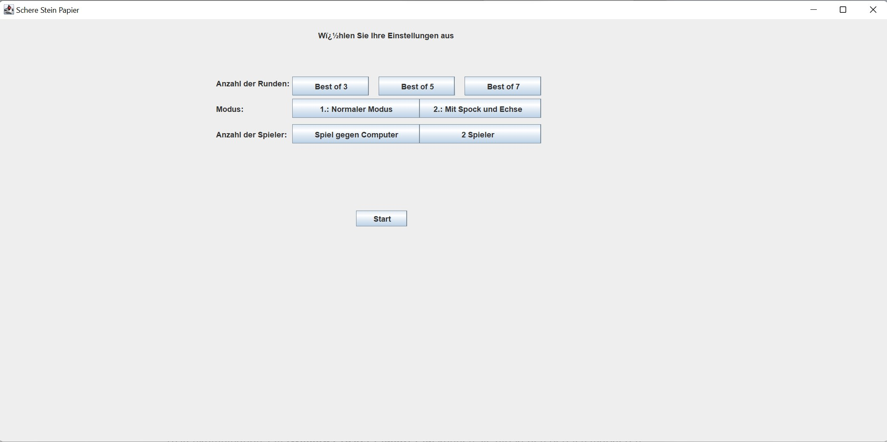

Jonas Zimmermann (jonas.zimmermann@hs-furtwangen.de)
Burak Dogruoez (burak.dogruoez@hs-furtwangen.de)
Adham Sino (adham.sino@hs-furtwangen.de)
Leon Albrecht (leon.albrecht@hs-furtwangen.de)
Einleitung
Benutzerhandbuch zur Verwendung Ihrer Anwendung
Schere Steın Papıer
"
Altersempfehlung 5-99
Vorraussetzungen: PC/Laptop
Mit dem Betätigen der 'Spiel'-Taste, kommt man in das Menü des Spiels.
Hier stehen dem Spieler verschiedene Modis zur Verfügung.

Erst entscheidet man zwischen der Rundenanzahl. Hier wählt man zwischen Best of 3, Best of 5, Best of 7 aus.
Best of 3: Derjenige, der aus 3 Spielen mehr Spiele für sich entscheiden kann, gewinnt.
Best of 5: Derjenige, der aus 5 Spielen mehr Spiele für sich entscheiden kann, gewinnt.
Best of 7: Derjenige, der aus 7 Spielen mehr Spiele für sich entscheiden kann, gewinnt.
Als Nächstes wird der Modus ausgesucht. Hier kann man entweder den 'Normalen Modus' oder 'Mit Spock und Echse' wählen.
1: Normaler Modus: Normales 'Schere, Stein, Papier', indem Schere gegen Papier, Stein gegen Schere und Papier gegen Stein gewinnt.
2: Mit Spock und Echse: Zusätlich zu dem klassischen 'Schere, Stein, Papier' kommt hier Spock und Echse dazu.
Hier gewinnt Stein gegen Echse,
Echse gegen Spock, Spock gegen Schere, Schere gegen Echse,
Echse gegen Papier, Papier gegen Spock,
Spock gegen Stein, Stein gegen Schere.
Als Letztes wählt man die Anzahl der Spieler.
Hier kann man entweder das 'Spiel gegen Computer' oder das '2 Spieler' wählen.
Spiel gegen Computer: Hier wählt der Spieler eines der Elemente aus. Der Computer wählt zufällig auch eines der Elemente aus.
Dann kommt die Anzeige: 'Sie haben ... ausgewählt.' und 'Der Computer hat ... ausgewählt.' .
AUßerdem erscheint die Anzeige 'Du hast gewonnen :)', wenn der Spieler gewonnen hat oder die Anzeige 'Unentschieden',
wenn beide dasselbe Element gewählt haben oder die Anzeige 'Du hast verloren :c', wenn der Computer diese Runde gewonnen hat.
2 Spieler: Hier wählen zwei Spieler gleichzeitig durch verdecken deren Element und im nächsten Fenster entscheidet sich wer die Runde gewonnen hat.
Mit dem Betätigen des 'Start' Buttons beginnt das Spiel mit den vom Spieler ausgewählten Bedingungen.
Im Spiel wählt man zwischen den Elementen und klickt auf das zugehörige Button.
Nach Rundenende erscheint das Ergebnis.
Die Anzeige 'Du hast das Spiel gewonnen' erscheint wenn der Spieler gewonnen,
'Du hast das Spiel verloren', wenn der Spieler verloren hat.
Nach erfolgreichem Abschluss des Spiels besteht die Möglichkeit erneut zu spielen,
zurück ins Menü zu gehen oder die Highscoreliste anzuschauen. .
Der Button 'Play again' steht für ein erneutes Spiel,
'Back to Title' steht für das Zurückgehen ins Menü,
und der Button 'Highscore' steht für die Highscoreliste.
 "
"